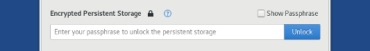
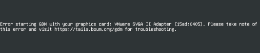

This release fixes many security vulnerabilities. You should upgrade as soon as possible.
Changes and upgrades
Use https://keys.openpgp.org/, also available on http://zkaan2xfbuxia2wpf7ofnkbz6r5zdbbvxbunvp5g2iebopbfc4iqmbad.onion/, as the default OpenPGP keyserver.
If you have GnuPG keys stored in Persistence since before Tails 4.1, you should update your OpenPGP keyserver configuration and adapt your Tails to this change.
Update Tor Browser to 9.0.2.
Update Thunderbird to from 60.9.0 to 68.2.2.
Replace the TorBirdy extension with custom settings and patches in Thunderbird that provide equivalent privacy.
Update Enigmail to 2.1.3, which has a simplified setup wizard that automatically creates an OpenPGP key for new email accounts.
Update Linux to 5.3.9. This should improve the support for newer hardware (graphics, Wi-Fi, etc.).
Fixed problems
Add back the Show Passphrase check box in Tails Greeter. (#17177)

Fix the display of the troubleshooting error when GDM fails to start. (#17200)

Add back the option to Open in Terminal when doing right-click (on Mac, click with two fingers) in a folder in the Files browser. (#17186)
Make the installation of additional software more reliable. (#17203)
For more details, read our changelog.
Known issues
None specific to this release.
See the list of long-standing issues.
Get Tails 4.1
To upgrade your Tails USB stick and keep your persistent storage
Automatic upgrades are available from 4.0 to 4.1.
If you cannot do an automatic upgrade or if Tails fails to start after an automatic upgrade, please try to do a manual upgrade.
To install Tails on a new USB stick
Follow our installation instructions:
All the data on this USB stick will be lost.
To download only
If you don't need installation or upgrade instructions, you can directly download Tails 4.1:
What's coming up?
Tails 4.2 is scheduled for January 7.
Have a look at our roadmap to see where we are heading to.
We need your help and there are many ways to contribute to Tails (donating is only one of them). Come talk to us!